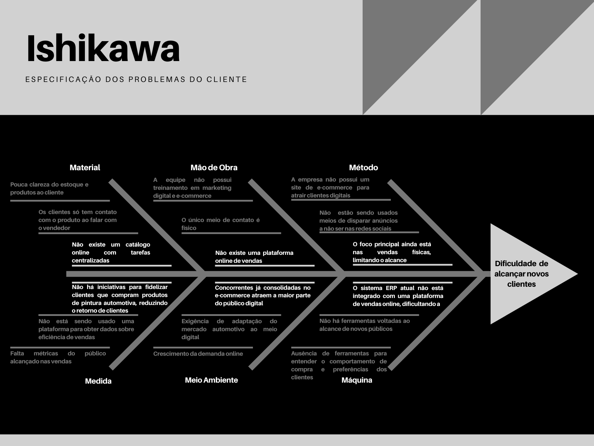

1 CENÁRIO ATUAL DO CLIENTE E DO NEGÓCIO
1.1 Introdução ao Negócio e Contexto
A empresa, Auto Rei Tintas, é uma loja que atua no setor de varejo e atacado, ou seja, vende para outras empresas ou para uma pessoa física. É especializada em produtos para pintura automotiva e serviços de estética veicular, como por exemplo, pintura completa ou parcial de veículos e de produtos para essas finalidades, como tintas automotivas, verniz automotivo, polidor de corte, maquiador de imperfeições, boinas de polimentos. Ela atende tanto empresas quanto consumidores individuais que buscam pintar e cuidar de seus veículos. O público é bastante diverso, atendendo qualquer pessoa com mais de 18 anos, ou seja, todos que têm interesse em manter a aparência, o valor do veículo e até diferenciá-lo de outros carros com seu próprio estilo. Um dos pontos fortes desta empresa é que ela já conta com um sistema atual de ERP (Planejamento de recursos empresariais), portanto, ela possui um sistema eficiente de gestão de recursos. Atualmente, a forma de vender está diferente, e é muito mais fácil vender de forma virtual. Contudo, a empresa Auto rei tintas não possui nenhum formato de venda digital, nem nenhum canal de venda na internet .
1.2 Identificação da Oportunidade ou Problema
Problema: Dificuldade de Alcançar Novos Clientes
A dificuldade em alcançar novos clientes se apresenta como um desafio constante para a Auto Rei Tintas, em parte devido à limitação em se adaptar às novas exigências do mercado digital. Em termos de método, a empresa ainda depende fortemente das vendas presenciais e locais, o que restringe o alcance a um público específico e mais tradicional. Sem um site de e-commerce, a Auto Rei Tintas perde oportunidades de venda para consumidores que preferem a conveniência de adquirir produtos online, uma tendência crescente em todos os setores, inclusive no automotivo. Além disso, a ausência de uma estratégia de marketing digital, que incluiria campanhas online direcionadas e anúncios em redes sociais, impede a expansão da visibilidade da marca para um público mais amplo e digitalmente ativo.
Quanto à tecnologia, a Auto Rei Tintas enfrenta limitações com o sistema ERP atual, que, embora eficiente para o gerenciamento interno, não possui integração com plataformas de e-commerce. Essa ausência de integração torna a expansão para o ambiente digital mais complexa e custosa, pois exigiria adaptações tecnológicas significativas. Além disso, a falta de ferramentas de análise de dados impede a empresa de entender com profundidade o comportamento dos clientes e suas preferências de compra, uma informação valiosa para a criação de estratégias de venda direcionadas.
No aspecto de mão de obra, a equipe da Auto Rei Tintas apresenta limitações em marketing digital, uma área que exige conhecimentos específicos para a criação de campanhas, gestão de redes sociais e atendimento ao cliente em canais digitais. A ausência de profissionais especializados nesses processos limita a capacidade da empresa de atuar de maneira eficaz no ambiente online. Além disso, a falta de uma equipe dedicada à gestão e ao atendimento em canais digitais dificulta o suporte e a comunicação rápida com potenciais novos clientes que buscam informações ou tiram dúvidas online.
Considerando o meio ambiente do mercado automotivo, observa-se que o setor está cada vez mais digitalizado. Empresas concorrentes que já possuem lojas virtuais e estratégias de marketing online consolidadas acabam captando a atenção de clientes que a Auto Rei Tintas, por enquanto, não consegue atingir. Essa tendência de digitalização demanda adaptações constantes para competir de forma eficaz e posicionar a marca frente às novas expectativas do consumidor, que está mais inclinado a realizar pesquisas e compras online.
Em relação às medidas e políticas internas, a Auto Rei Tintas não possui um plano estruturado para a expansão digital, o que representa uma lacuna estratégica. A falta de uma política específica de fidelização de clientes também significa que há poucas iniciativas para reter os consumidores que, eventualmente, adquirem produtos da marca. Um programa de fidelização poderia não apenas incentivar a recorrência de compra, mas também fortalecer o relacionamento com o cliente, aumentando a probabilidade de indicações espontâneas para novos clientes.
Por fim, a questão dos materiais e do portfólio de produtos da Auto Rei Tintas também contribui para essa dificuldade de captação. Sem um site, a empresa não consegue fornecer informações detalhadas e acessíveis sobre os produtos, o que limita o conhecimento que os clientes em potencial podem ter sobre a variedade de produtos disponíveis. A ampla linha de produtos da Auto Rei Tintas poderia ser explorada como uma vantagem competitiva, mas, sem um canal digital, essa variedade não chega ao conhecimento do público online.

1.3 Desafios do Projeto
| Desafio | Descrição |
|---|---|
| Integração com Mercado Pago | Necessidade de integração eficiente do serviço de pagamento Mercado Pago ao site |
| Segurança | Implementação de estratégias de segurança para proteger o site contra invasões |
1.4 Segmentação de Clientes
A loja de produtos para pintura automotiva e estética veicular atende a uma base de clientes bastante diversificada, dividida em três principais perfis:
Consumidores Individuais (Público Final): Este grupo é composto por pessoas físicas, geralmente entusiastas de automóveis, que buscam produtos para personalização e manutenção estética de seus veículos. Esses clientes valorizam a aparência e a conservação de seus carros e desejam acesso a uma variedade de produtos de alta qualidade, como tintas e acessórios para acabamento.
Pequenas e Médias Empresas (PMEs): Empresas que oferecem serviços de pintura e manutenção automotiva, como oficinas e centros de estética veicular, também formam uma parcela importante da clientela. Essas empresas procuram produtos de qualidade com boa durabilidade e estão interessadas em benefícios como compras em maior quantidade e melhores condições de pagamento.
Empresas de Grande Porte (Atacado): Esta categoria inclui grandes empresas e redes de manutenção automotiva que compram em volumes elevados. Essas empresas buscam otimização de custo e confiabilidade, valorizando uma parceria com um fornecedor que possa oferecer condições comerciais vantajosas, suporte logístico eficiente e um sistema prático de gestão de pedidos.
2 SOLUÇÃO PROPOSTA
2.1 Objetivos do Produto
O objetivo deste projeto é aumentar a captação de clientes virtuais para a loja de tintas e serviços de pintura automotiva. A criação de um site de vendas busca expandir a presença online da empresa e atrair novos clientes, oferecendo uma experiência de compra, visando aumentar a visibilidade da empresa no mercado automotivo, promover um fluxo contínuo de novos clientes, impulsionar as vendas, obter o melhor rendimento com o mínimo de erros. Alinhando-se aos objetivos de crescimento da loja.
2.2 Características da Solução
O site será organizado de maneira que permite os usuários encontrarem as tintas disponíveis, divididas em categorias como por exemplo: 'Cores Metálicas' e 'Acabamento Fosco'. O processo de compra permite que os clientes adicionem produtos ao carrinho e finalizem a compra. Além disso, as informações sobre cada produto, como preço e quantidade, estarão visíveis na mesma página. A barra de busca permitirá que os clientes encontrem a cor ou marca desejada.
Dentre as principais características que a solução se propõe a ter são:
-
Um catálogo online de produtos e serviços, com informações detalhadas para auxiliar na decisão de compra.
-
Ferramentas de busca e filtragem que permitam ao usuário encontrar o que precisa com a menor quantidade de ações possíveis.
-
Funcionalidade de múltiplas opções de pagamento (cartão, boleto, Pix).
2.3 Tecnologias a Serem Utilizadas
| Tecnologia | Descrição |
|---|---|
| Biblioteca JavaScript para desenvolvimento da interface de usuário do site | |
| Tecnologias para o backend, facilitando a integração de funcionalidades e transações | |
| Banco de dados relacional para armazenar informações com o uso de SQL | |
| Plataforma backend como serviço que utiliza PostgreSQL para fornecer autenticação, banco de dados e funções em tempo real | |
| Plataforma de pagamento online para processar transações financeiras de forma segura e eficiente | |
2.4 Pesquisa de Mercado e Análise Competitiva
| Concorrente | Pontos Fortes | Limitações |
|---|---|---|
| Distec | Plataforma especializada no setor automotivo, oferecendo produtos de alta qualidade e focada no público profissional | Experiência de compra voltada para profissionais, o que pode ser confuso para consumidores finais |
| Autozone | Ampla gama de produtos automotivos e conhecida no mercado, com bom portfólio para os consumidores da área | Funcionamento apenas como catálogo de produtos, sem sistema de compras online |
2.5 Análise de Viabilidade
Acredita-se que a solução desenvolvida quando analisada pelo ponto de vista técnico, é bastante viável uma vez que um comércio online é uma ferramenta já implementada em muitos outros grandes negócios, seria necessário um investimento do cliente no momento de manter o site funcionando já que faz-se o uso de serviços terceirizados do mercado pago.
Comparação
Distec: Embora a Distec atenda bem aos profissionais da área automotiva, ela se concentra no mercado empresarial e oferece uma experiência mais técnica e especializada. Isso pode ser um desafio para atrair consumidores finais que buscam uma experiência de compra menos profissional.
Autozone: O site da Autozone funciona apenas como um catálogo de produtos, sem funcionalidade de e-commerce, o que limita a experiência de compra online. Isso pode ser frustrante para consumidores que querem uma plataforma onde possam realizar compras de forma direta.
Carrefour Auto: Embora seja parte de uma grande rede, o Carrefour Auto tem limitações, como o número restrito de opções de pagamento e a falta de avaliações de produtos pelos consumidores. Essas limitações podem diminuir a confiança do cliente e a transparência nas compras.
Tecnologias
Além disso, em relação aos recursos tecnológicos - React, Node, Express, Postgres e Supabase - eles são acessíveis para o uso.
Equipe
Em relação à equipe, todos possuem experiências nessas tecnologias citadas ou em similares em suas respectivas áreas de desenvolvimento. Portanto, a curva de aprendizados das tecnologias citadas, não será grande, possibilitando não só o aprendizado como o desenvolvimento apropriado da solução proposta.
Prazo
Sobre o tempo de desenvolvimento da aplicação, é sugerido que ele seja finalizado em 4 meses.
2.6 Impacto da Solução
O que esta solução de software propõe são os seguintes principais benefícios:
-
Mercado Digital e alcance: a solução proverá um aumento significativo na presença da empresa em questão no mercado digital, de tal forma que seu alcance cresça.
-
Comunicação com o cliente: a solução estabelece uma nova possibilidade de acesso do cliente ao produto, de tal modo que possa estabelecer uma comunicação mais direta e uma noção mais detalhada dos tipos de produtos que a empresa vende.
-
Aumento nas vendas: uma das principais consequências ao se aumentar os meios que se propagam a visibilidade da empresa é o aumento de lucro por parte dela.
-
Competitividade virtual: o consequente engajamento por conta de clientes promoverá a inserção da empresa na competitividade do mercado virtual de tintas, dando a oportunidade ao empresário de aprimorar constantemente seus produtos, serviços e estratégias.
Histórico de Versões
| Versão | Data | Descrição | Autor(es) | Revisor(es) |
|---|---|---|---|---|
1.0 |
11/11/2024 | Adição dos tópicos 1 e 2 de Visão do Produto | Johan e Paulo Henrique | Johan, Paulo Henrique, Mariana Letícia, Mateus Cavalcante e Diogo |